Candidate List 20260715Last night — ZTF: 4,211 passed basic cuts (210 young) · LSST: 0 passed basic cuts (0 young)Previous Day Next Day
Section 1: New Sources (age<1d) Section 2: Old (1-5d) sources observed last nightplaceholder
Section 1: New Afterglow/FBOT Cands Last Night (3)
1. [ZTF] ZTF26abhadjt (Afterglow?) [Back to Top] [Share] [Trigger Swift] [Fritz Alert] [Fritz Source] [Lasair]RA, Dec: 279.38958, 39.31212 18h37m33.50s, 39d18m43.62sGalactic (l, b): 68.01808, 19.30291 ext(g-r) = 0.063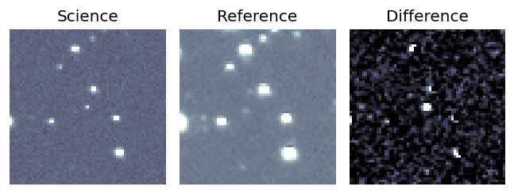
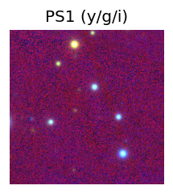
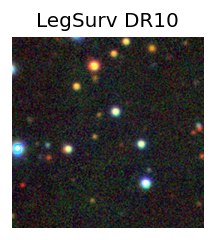
TESS: Sectors [ 14 26 40 53 54 74 80 81 118 119]
PS1: 0 sources in 3 arcsec
LegacySurvey: 1 sources in 3 arcsec Closest: d = 5.01 arcsec, 109.4 deg (east of north) photoz=0.33 (68% bounds 0.09, 0.45), type=PSF peak abs mag = -21.29 (68% bounds -18.26, -22.05)
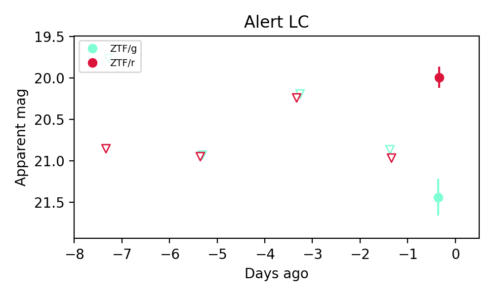
Extinction-corrected gr color:
From alerts: 1.39 +/- 0.26 mag
Consistent with synchrotron, g-r>0!
Rise Rate:
r: 0.97 mag/day
Fade Rate:
2. [ZTF] ZTF26abhayxu (Afterglow?) [Back to Top] [Share] [Trigger Swift] [Fritz Alert] [Fritz Source] [Lasair]RA, Dec: 266.15613, 3.95523 17h44m37.47s, 3d57m18.83sGalactic (l, b): 28.78041, 16.65693 ext(g-r) = 0.343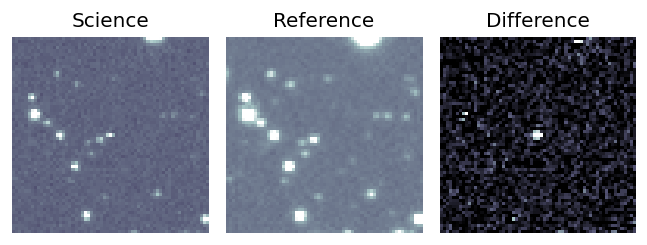
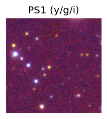

TESS: Sectors 118
PS1: 0 sources in 3 arcsec
LegacySurvey: 0 sources in 3 arcsec
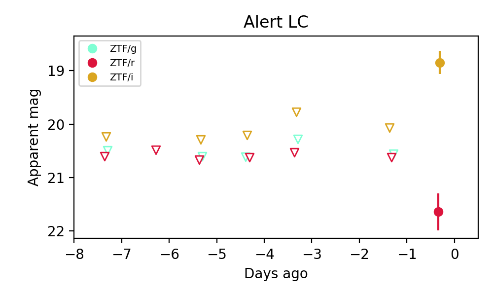
Extinction-corrected ri color:
From alerts: 2.61 +/- 0.41 mag
Consistent with synchrotron, g-r>0!
Rise Rate:
i: 1.15 mag/day
Fade Rate:
3. [ZTF] ZTF26abhdsdb (FBOT?) [Back to Top] [Share] [Trigger Swift] [Fritz Alert] [Fritz Source] [Lasair]RA, Dec: 337.26588, 65.67858 22h29m3.81s, 65d40m42.89sGalactic (l, b): 108.96371, 6.74509 ext(g-r) = 0.821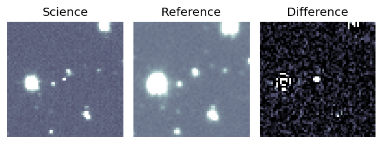
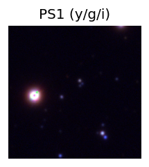

TESS: Sectors [17 24 57 58 77 78 84 85]
SDSS (<15 kpc):Found SDSS phot-z: z=0.05; peak abs mag = -19.71
PS1: 0 sources in 3 arcsec
LegacySurvey: 0 sources in 3 arcsec
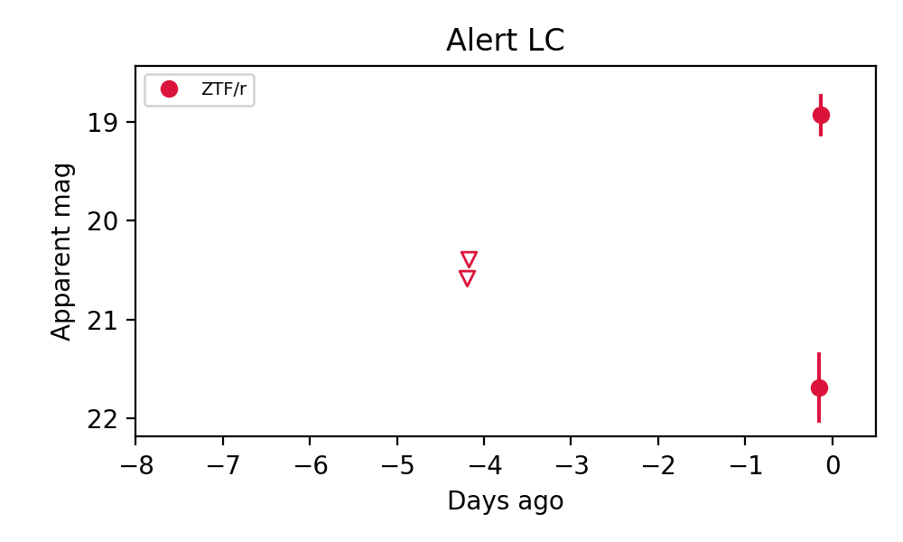
Rise Rate:
r: 191.64 mag/day
Fade Rate:
Section 2: Older Sources Observed Last Night (32)
0. [ZTF] ZTF26abfokua (Afterglow?) [Back to Top] [Share] [Trigger Swift] [Fritz Alert] [Fritz Source] [Lasair]RA, Dec: 277.81507, -5.57553 18h31m15.62s, -5d-34m-31.91sGalactic (l, b): 25.66774, 1.92447 ext(g-r) = 1.728


TESS: Sectors 80
PS1: 0 sources in 3 arcsec
LegacySurvey: 0 sources in 3 arcsec

Extinction-corrected gr color:
From alerts: 0.19 +/- 0.05 mag
Extinction-corrected gi color:
From alerts: 0.31 +/- 0.04 mag
Extinction-corrected ri color:
From alerts: 0.13 +/- 0.04 mag
Consistent with synchrotron, g-r>0!
Rise Rate:
g: 0.27 mag/day
r: 1.31 mag/day
i: 2.41 mag/day
Fade Rate:
1. [ZTF] ZTF26abfosdk (Afterglow?) [Back to Top] [Share] [Trigger Swift] [Fritz Alert] [Fritz Source] [Lasair]RA, Dec: 319.07249, 4.96533 21h16m17.40s, 4d57m55.21sGalactic (l, b): 56.18622, -28.97023 ext(g-r) = 0.123


TESS: Sectors [55 82]
SDSS (<15 kpc):Found SDSS phot-z: z=0.04; peak abs mag = -17.53
PS1: 0 sources in 3 arcsec
LegacySurvey: 1 sources in 3 arcsec Closest: d = 3.53 arcsec, 279.6 deg (east of north) photoz=0.03 (68% bounds 0.02, 0.05), type=SER peak abs mag = -17.04 (68% bounds -16.07, -18.0)

Extinction-corrected gr color:
From alerts: -0.0 +/- 0.13 mag
Extinction-corrected gi color:
From alerts: -0.12 +/- 0.15 mag
Extinction-corrected ri color:
From alerts: -0.12 +/- 0.13 mag
Consistent with synchrotron, g-r>0!
Rise Rate:
g: 0.03 mag/day
r: 0.44 mag/day
i: 0.9 mag/day
Fade Rate:
r: 1.66 mag/day
i: 0.6 mag/day
2. [ZTF] ZTF26abfzped (Afterglow?) [Back to Top] [Share] [Trigger Swift] [Fritz Alert] [Fritz Source] [Lasair]RA, Dec: 290.70863, 15.60847 19h22m50.07s, 15d36m30.50sGalactic (l, b): 50.35602, 0.3225 ext(g-r) = 10.13


TESS: Sectors [ 14 40 54 81 119]
PS1: 0 sources in 3 arcsec
LegacySurvey: 0 sources in 3 arcsec

Extinction-corrected gr color:
From alerts: -9.44 +/- 0.12 mag
Rise Rate:
r: 1.59 mag/day
Fade Rate:
g: 0.24 mag/day
r: 0.1 mag/day
3. [ZTF] ZTF26abgtkst (FBOT?) [Back to Top] [Share] [Trigger Swift] [Fritz Alert] [Fritz Source] [Lasair]RA, Dec: 243.8979, 57.73204 16h15m35.50s, 57d43m55.34sGalactic (l, b): 88.22939, 43.18322 ext(g-r) = 0.012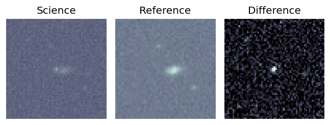
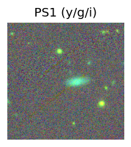
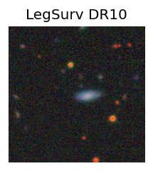
TESS: Sectors [ 15 16 22 23 24 25 49 50 51 52 56 58 76 77 78 79 82 83
117 121]
PS1: 0 sources in 3 arcsec
LegacySurvey: 1 sources in 3 arcsec Closest: d = 1.21 arcsec, 258.8 deg (east of north) photoz=0.7 (68% bounds 0.24, 1.19), type=PSF peak abs mag = -23.14 (68% bounds -20.45, -24.56)
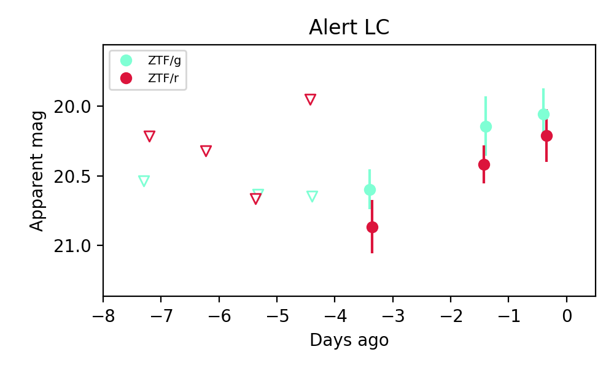
Extinction-corrected gr color:
From alerts: -0.17 +/- 0.26 mag
Consistent with synchrotron, g-r>0!
Rise Rate:
g: 0.19 mag/day
r: 0.22 mag/day
Fade Rate:
4. [ZTF] ZTF26abgvfty (FBOT?) [Back to Top] [Share] [Trigger Swift] [Fritz Alert] [Fritz Source] [Lasair]RA, Dec: 266.21331, 14.91474 17h44m51.19s, 14d54m53.07sGalactic (l, b): 39.27074, 21.32877 ext(g-r) = 0.096


TESS: Sectors [ 26 53 79 80 118]
PS1: 0 sources in 3 arcsec
LegacySurvey: 1 sources in 3 arcsec Closest: d = 0.41 arcsec, 321.9 deg (east of north) photoz=0.19 (68% bounds 0.15, 0.29), type=SER peak abs mag = -20.3 (68% bounds -19.65, -21.31)

Extinction-corrected gr color:
From alerts: -0.31 +/- 0.2 mag
Extinction-corrected gi color:
From alerts: -0.64 +/- 0.4 mag
Extinction-corrected ri color:
From alerts: -0.33 +/- 0.37 mag
Consistent with synchrotron, g-r>0!
Rise Rate:
g: 0.39 mag/day
r: 0.22 mag/day
Fade Rate:
5. [ZTF] ZTF26abgxhag (FBOT?) [Back to Top] [Share] [Trigger Swift] [Fritz Alert] [Fritz Source] [Lasair]RA, Dec: 339.27449, -5.85116 22h37m5.88s, -5d-51m-4.17sGalactic (l, b): 60.48864, -51.6321 WARNING: 2.67 deg from ecliptic plane ext(g-r) = 0.043


TESS: Sectors [70 92]
SDSS (<15 kpc):Found SDSS phot-z: z=0.13; peak abs mag = -19.62
PS1: 0 sources in 3 arcsec
LegacySurvey: 1 sources in 3 arcsec Closest: d = 2.27 arcsec, 312.0 deg (east of north) photoz=0.55 (68% bounds 0.28, 1.18), type=EXP peak abs mag = -23.19 (68% bounds -21.48, -25.22)

Extinction-corrected gr color:
From alerts: -0.29 +/- 0.25 mag
Extinction-corrected gi color:
From alerts: -0.41 +/- 0.25 mag
Extinction-corrected ri color:
From alerts: -0.12 +/- 0.22 mag
Consistent with synchrotron, g-r>0!
Rise Rate:
g: 0.29 mag/day
r: 0.23 mag/day
i: 0.25 mag/day
Fade Rate:
6. [ZTF] ZTF26abgyuuy (FBOT?) [Back to Top] [Share] [Trigger Swift] [Fritz Alert] [Fritz Source] [Lasair]RA, Dec: 230.76378, -3.40558 15h23m3.31s, -3d-24m-20.10sGalactic (l, b): 359.03654, 42.36934 ext(g-r) = 0.141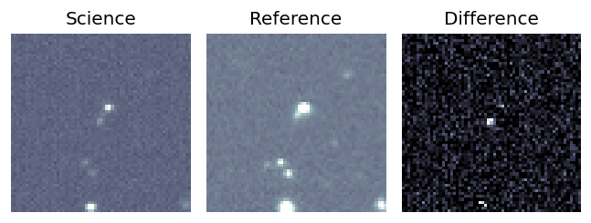
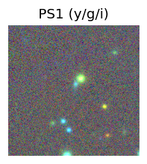
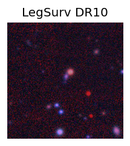
TESS: Sectors 51
PS1: 0 sources in 3 arcsec
LegacySurvey: 1 sources in 3 arcsec Closest: d = 1.22 arcsec, 174.5 deg (east of north) photoz=1.06 (68% bounds 0.84, 1.3), type=PSF peak abs mag = -24.39 (68% bounds -23.75, -24.92)
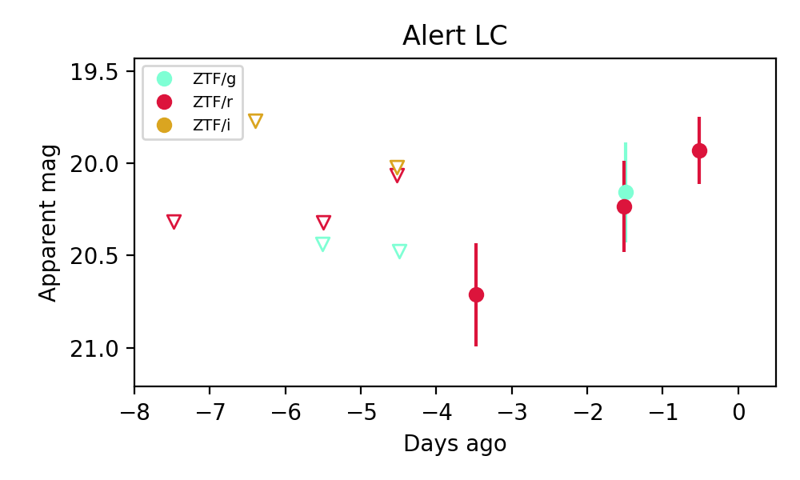
Extinction-corrected gr color:
From alerts: -0.22 +/- 0.37 mag
Consistent with synchrotron, g-r>0!
Rise Rate:
r: 0.26 mag/day
Fade Rate:
7. [ZTF] ZTF26abgzawj (FBOT?) [Back to Top] [Share] [Trigger Swift] [Fritz Alert] [Fritz Source] [Lasair]RA, Dec: 233.92208, 12.96225 15h35m41.30s, 12d57m44.10sGalactic (l, b): 20.98776, 49.13261 ext(g-r) = 0.046


TESS: Sectors 51
NED (10 arcsec):Found NED spec-z: z=0.09; peak abs mag = -18.22
PS1: 0 sources in 3 arcsec
LegacySurvey: 1 sources in 3 arcsec Closest: d = 1.24 arcsec, 297.0 deg (east of north) photoz=0.34 (68% bounds 0.26, 0.48), type=SER peak abs mag = -21.26 (68% bounds -20.6, -22.19)

Extinction-corrected gr color:
From alerts: 0.04 +/- 0.16 mag
Extinction-corrected gi color:
From alerts: -0.01 +/- 0.22 mag
Extinction-corrected ri color:
From alerts: -0.05 +/- 0.23 mag
Consistent with synchrotron, g-r>0!
Rise Rate:
g: 0.43 mag/day
r: 0.08 mag/day
Fade Rate:
8. [ZTF] ZTF26abgzgza (FBOT?) [Back to Top] [Share] [Trigger Swift] [Fritz Alert] [Fritz Source] [Lasair]RA, Dec: 286.93966, 24.61851 19h 7m45.52s, 24d37m6.64sGalactic (l, b): 56.74759, 7.60729 ext(g-r) = 0.501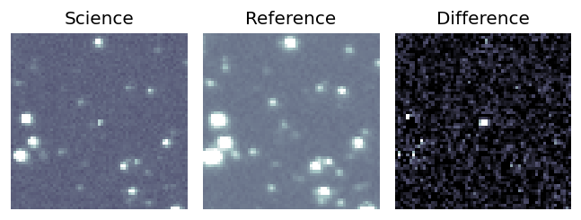
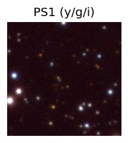

TESS: Sectors [ 14 40 54 80 81 119]
PS1: 1 source in 3 arcsec Closest: d = 3.05 arcsec photoz=0.09+/-0.52 peak abs mag = -20.24
LegacySurvey: 0 sources in 3 arcsec
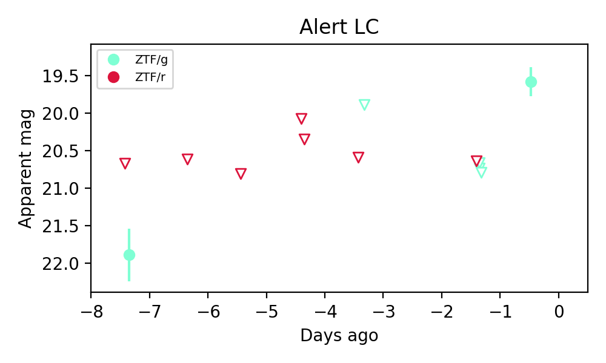
Extinction-corrected gr color:
From alerts: 0.72 +/- 99 mag
Rise Rate:
g: 1.43 mag/day
Fade Rate:
9. [ZTF] ZTF26abgzpiu (FBOT?) [Back to Top] [Share] [Trigger Swift] [Fritz Alert] [Fritz Source] [Lasair]RA, Dec: 279.88075, 44.97656 18h39m31.38s, 44d58m35.62sGalactic (l, b): 73.84858, 20.79426 ext(g-r) = 0.068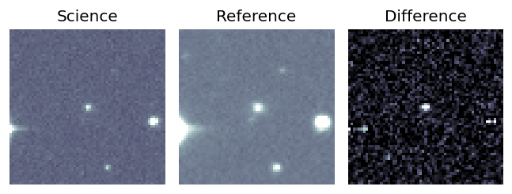
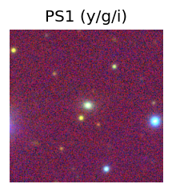
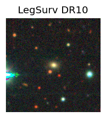
TESS: Sectors [ 14 26 40 41 53 54 74 80 81 118 119 120]
PS1: 0 sources in 3 arcsec
LegacySurvey: 1 sources in 3 arcsec Closest: d = 0.49 arcsec, 253.1 deg (east of north) photoz=0.16 (68% bounds 0.15, 0.18), type=SER peak abs mag = -19.6 (68% bounds -19.39, -19.83)
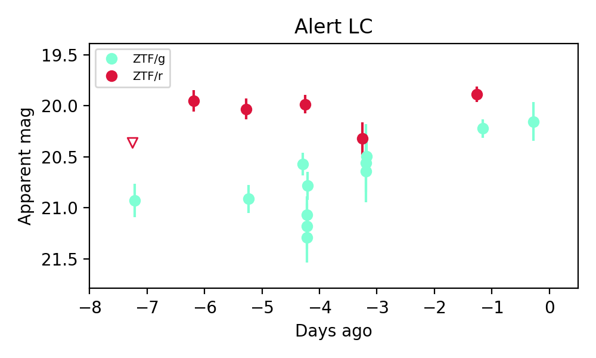
Extinction-corrected gr color:
From alerts: 0.27 +/- 0.12 mag
Consistent with synchrotron, g-r>0!
Rise Rate:
g: 0.15 mag/day
r: 0.38 mag/day
Fade Rate:
10. [ZTF] ZTF26abgzsfe (Afterglow?) [Back to Top] [Share] [Trigger Swift] [Fritz Alert] [Fritz Source] [Lasair]RA, Dec: 298.67435, -12.85164 19h54m41.84s, -12d-51m-5.90sGalactic (l, b): 28.25134, -19.74872 ext(g-r) = 0.173


TESS: Sectors [ 54 81 92 116]
NED (10 arcsec):Found NED spec-z: z=0.07; peak abs mag = -18.22
PS1: 0 sources in 3 arcsec
LegacySurvey: 0 sources in 3 arcsec

Extinction-corrected gi color:
From alerts: 0.02 +/- 0.18 mag
Consistent with synchrotron, g-r>0!
Rise Rate:
g: 0.68 mag/day
Fade Rate:
11. [ZTF] ZTF26abgzywv (Afterglow?) [Back to Top] [Share] [Trigger Swift] [Fritz Alert] [Fritz Source] [Lasair]RA, Dec: 257.29136, 57.33124 17h 9m9.93s, 57d19m52.45sGalactic (l, b): 85.79523, 36.24093 ext(g-r) = 0.023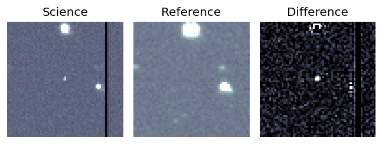
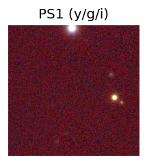
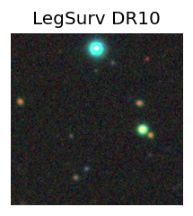
TESS: Sectors [ 14 15 17 19 20 21 22 23 24 25 26 40 41 47 48 49 50 51
52 53 54 55 56 57 58 59 60 73 74 75 76 77 78 79 80 81
83 84 86 117 118 119 120 121]
PS1: 0 sources in 3 arcsec
LegacySurvey: 0 sources in 3 arcsec
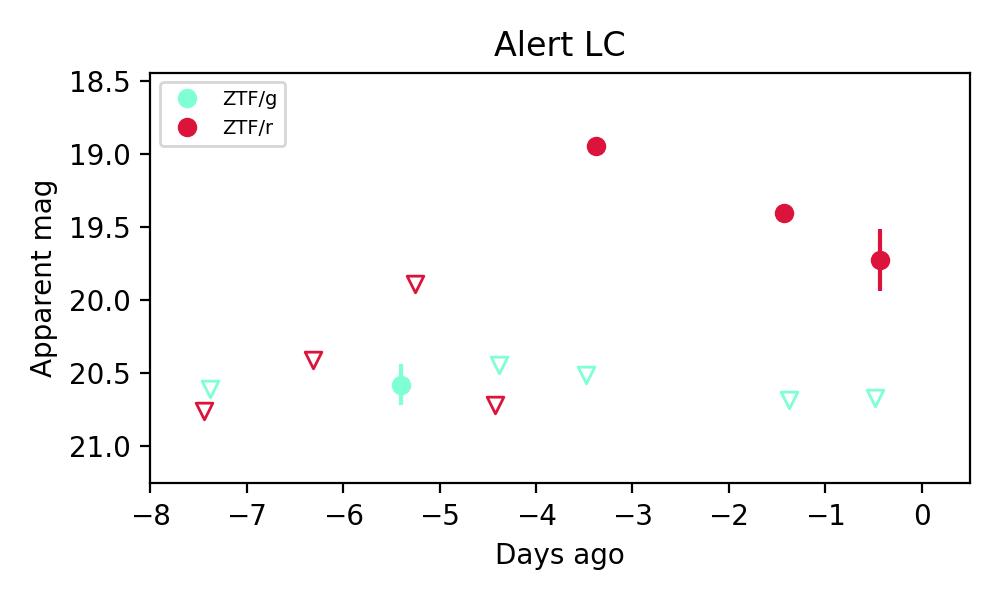
Extinction-corrected gr color:
From alerts: 0.92 +/- 99 mag
Rise Rate:
r: 1.71 mag/day
Fade Rate:
r: 0.24 mag/day
12. [ZTF] ZTF26abhaeha (FBOT?) [Back to Top] [Share] [Trigger Swift] [Fritz Alert] [Fritz Source] [Lasair]RA, Dec: 293.58602, 44.49709 19h34m20.65s, 44d29m49.54sGalactic (l, b): 77.24868, 11.62081 ext(g-r) = 0.2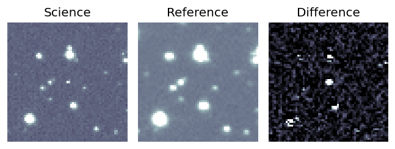
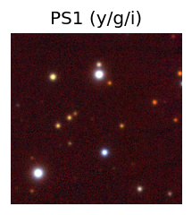

TESS: Sectors [ 14 15 40 41 54 55 74 75 81 82 119 120]
PS1: 1 source in 3 arcsec Closest: d = 7.71 arcsec photoz=0.52+/-0.21 peak abs mag = -23.26
LegacySurvey: 0 sources in 3 arcsec
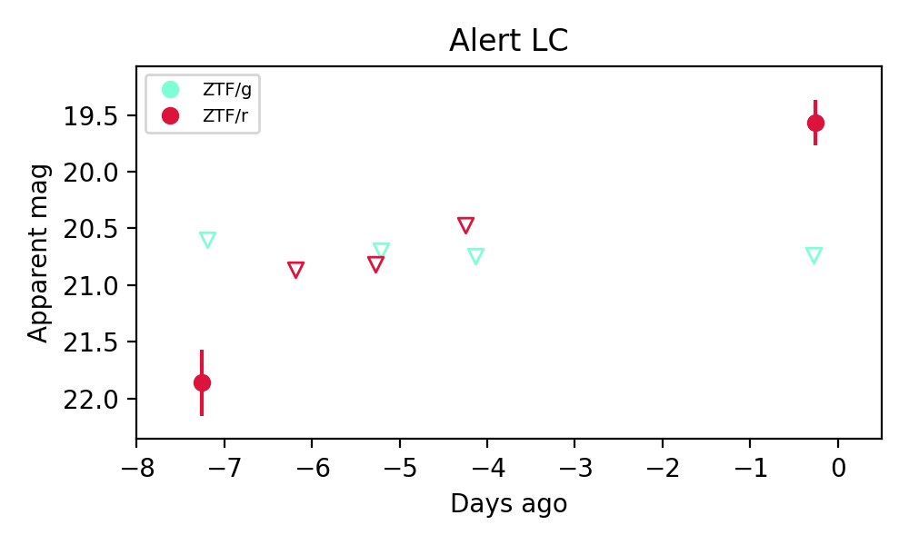
Extinction-corrected gr color:
From alerts: 0.97 +/- 99 mag
Rise Rate:
r: 0.33 mag/day
Fade Rate:
13. [ZTF] ZTF26abhaety (Afterglow?) [Back to Top] [Share] [Trigger Swift] [Fritz Alert] [Fritz Source] [Lasair]RA, Dec: 273.41405, 47.08607 18h13m39.37s, 47d 5m9.84sGalactic (l, b): 74.74685, 25.68355 ext(g-r) = 0.032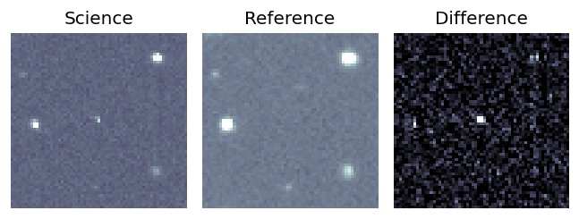
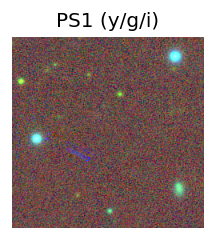
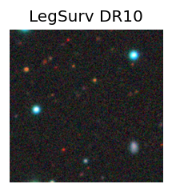
TESS: Sectors [ 26 40 41 52 53 54 74 79 81 117 118 119]
PS1: 0 sources in 3 arcsec
LegacySurvey: 1 sources in 3 arcsec Closest: d = 6.01 arcsec, 39.2 deg (east of north) photoz=1.14 (68% bounds 0.94, 1.26), type=REX peak abs mag = -24.4 (68% bounds -23.89, -24.67)
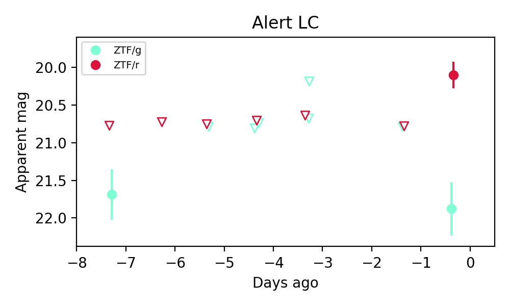
Extinction-corrected gr color:
From alerts: 1.75 +/- 0.4 mag
Consistent with synchrotron, g-r>0!
Rise Rate:
r: 0.68 mag/day
Fade Rate:
14. [ZTF] ZTF26abhafry (FBOT?) [Back to Top] [Share] [Trigger Swift] [Fritz Alert] [Fritz Source] [Lasair]RA, Dec: 268.68771, 19.33756 17h54m45.05s, 19d20m15.21sGalactic (l, b): 44.62618, 20.89117 ext(g-r) = 0.092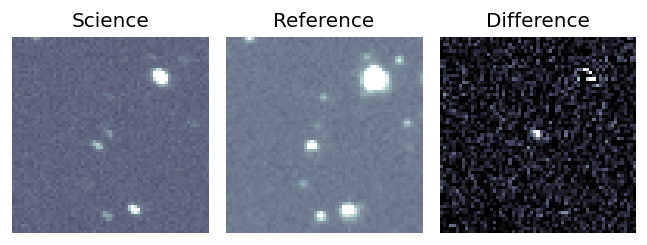
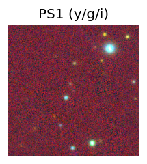
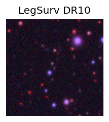
TESS: Sectors [26 53 79]
PS1: 0 sources in 3 arcsec
LegacySurvey: 1 sources in 3 arcsec Closest: d = 0.73 arcsec, 162.3 deg (east of north) photoz=0.49 (68% bounds 0.38, 0.8), type=PSF peak abs mag = -22.17 (68% bounds -21.49, -23.45)
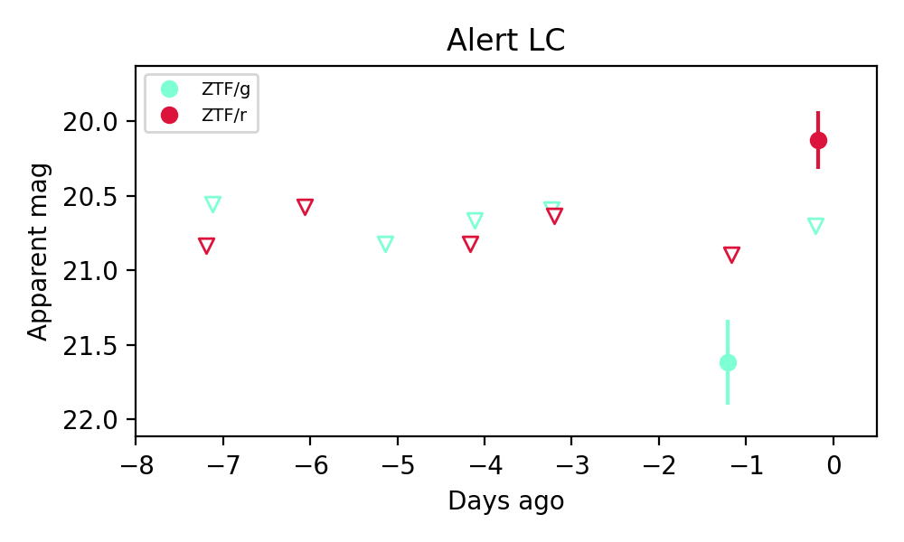
Extinction-corrected gr color:
From alerts: 0.48 +/- 99 mag
Rise Rate:
r: 0.77 mag/day
Fade Rate:
15. [ZTF] ZTF26abhagku (FBOT?) [Back to Top] [Share] [Trigger Swift] [Fritz Alert] [Fritz Source] [Lasair]RA, Dec: 270.4564, 38.84503 18h 1m49.54s, 38d50m42.10sGalactic (l, b): 65.28898, 25.77787 ext(g-r) = 0.03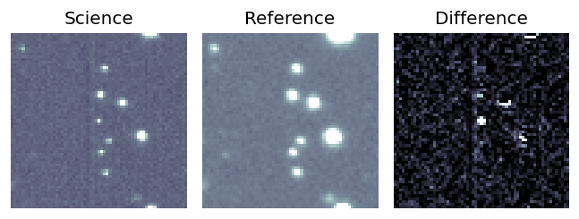
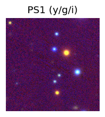
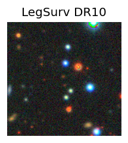
TESS: Sectors [ 25 40 52 53 74 79 80 118 119]
SDSS (<15 kpc):Found SDSS phot-z: z=0.89; peak abs mag = -24.07
PS1: 0 sources in 3 arcsec
LegacySurvey: 1 sources in 3 arcsec Closest: d = 1.35 arcsec, 26.1 deg (east of north) photoz=0.62 (68% bounds 0.56, 0.72), type=REX peak abs mag = -23.04 (68% bounds -22.79, -23.46)
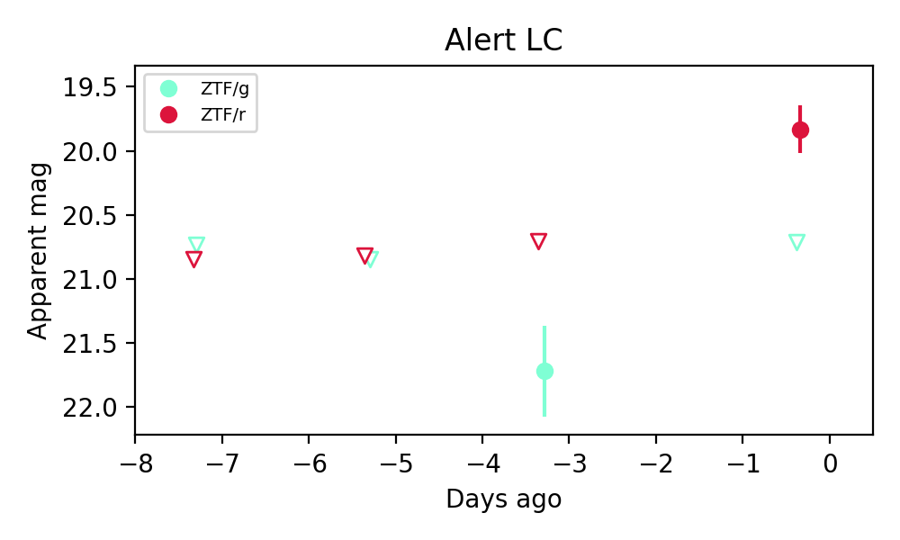
Extinction-corrected gr color:
From alerts: 0.85 +/- 99 mag
Rise Rate:
r: 0.29 mag/day
Fade Rate:
16. [ZTF] ZTF26abhahfm (FBOT?) [Back to Top] [Share] [Trigger Swift] [Fritz Alert] [Fritz Source] [Lasair]RA, Dec: 281.24773, 41.54338 18h44m59.46s, 41d32m36.17sGalactic (l, b): 70.74621, 18.73176 ext(g-r) = 0.066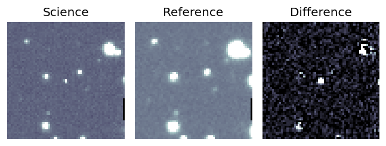
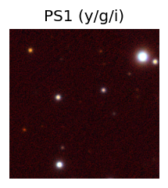
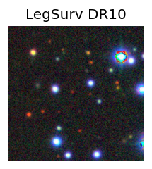
TESS: Sectors [ 14 26 40 41 53 54 74 80 81 118 119 120]
PS1: 0 sources in 3 arcsec
LegacySurvey: 1 sources in 3 arcsec Closest: d = 2.01 arcsec, 75.3 deg (east of north) photoz=0.69 (68% bounds 0.48, 1.16), type=PSF peak abs mag = -23.76 (68% bounds -22.81, -25.15)
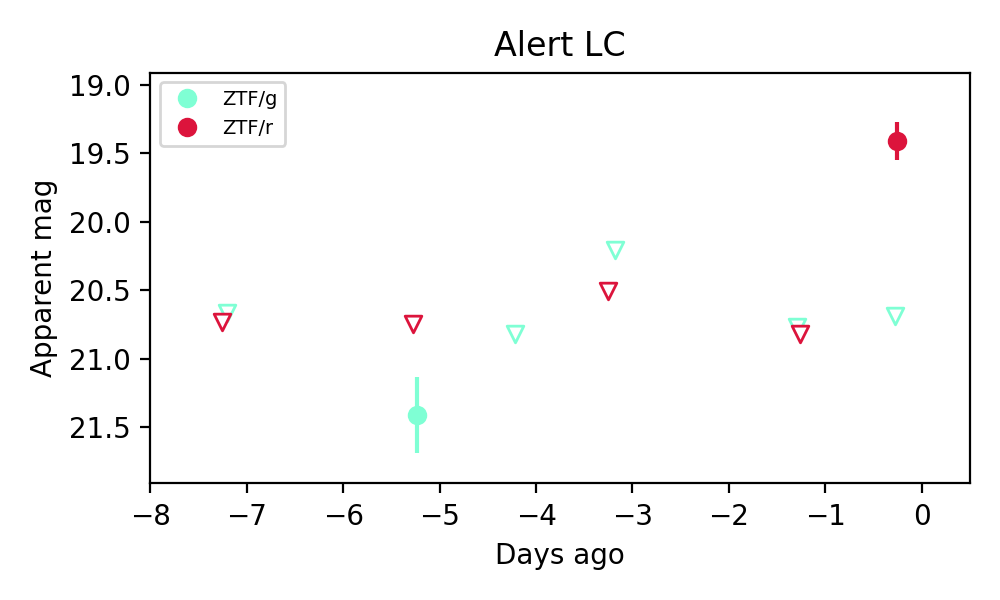
Extinction-corrected gr color:
From alerts: 1.21 +/- 99 mag
Rise Rate:
r: 1.41 mag/day
Fade Rate:
17. [ZTF] ZTF26abhajqk (FBOT?) [Back to Top] [Share] [Trigger Swift] [Fritz Alert] [Fritz Source] [Lasair]RA, Dec: 276.16938, -14.41488 18h24m40.65s, -14d-24m-53.57sGalactic (l, b): 17.08741, -0.75028 ext(g-r) = 12.376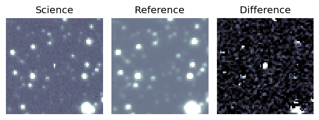
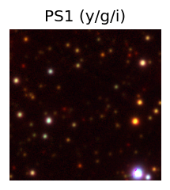

TESS: Sectors [ 80 91 92 116 118]
PS1: 1 source in 3 arcsec Closest: d = 0.96 arcsec photoz=0.27+/-0.04 peak abs mag = -48.61
LegacySurvey: 0 sources in 3 arcsec
Extinction-corrected ri color:
From alerts: -5.36 +/- 99 mag
Rise Rate:
r: 0.54 mag/day
Fade Rate:
18. [ZTF] ZTF26abhaoob (FBOT?) [Back to Top] [Share] [Trigger Swift] [Fritz Alert] [Fritz Source] [Lasair]RA, Dec: 284.91967, -19.31062 18h59m40.72s, -19d-18m-38.22sGalactic (l, b): 16.46144, -10.42705 WARNING: 3.4 deg from ecliptic plane ext(g-r) = 0.264
TESS: Sectors [ 92 116]
PS1: 1 source in 3 arcsec Closest: d = 2.91 arcsec photoz=0.24+/-0.13 peak abs mag = -21.34
LegacySurvey: 0 sources in 3 arcsec
Extinction-corrected ri color:
From alerts: 1.45 +/- 99 mag
Rise Rate:
r: 0.36 mag/day
Fade Rate:
19. [ZTF] ZTF26abhaqgc (FBOT?) [Back to Top] [Share] [Trigger Swift] [Fritz Alert] [Fritz Source] [Lasair]RA, Dec: 297.84153, 3.36628 19h51m21.97s, 3d21m58.61sGalactic (l, b): 42.92592, -11.70687 ext(g-r) = 0.213
TESS: Sectors [54 81]
PS1: 1 source in 3 arcsec Closest: d = 0.17 arcsec photoz=0.14+/-0.01 peak abs mag = -19.60
LegacySurvey: 0 sources in 3 arcsec
Extinction-corrected gr color:
From alerts: -0.42 +/- 0.28 mag
Extinction-corrected gi color:
From alerts: -0.44 +/- 0.34 mag
Extinction-corrected ri color:
From alerts: 0.37 +/- 0.25 mag
Consistent with synchrotron, g-r>0!
Rise Rate:
g: 0.31 mag/day
r: 0.37 mag/day
Fade Rate:
20. [ZTF] ZTF26abhaqnt (FBOT?) [Back to Top] [Share] [Trigger Swift] [Fritz Alert] [Fritz Source] [Lasair]RA, Dec: 296.43433, 3.43479 19h45m44.24s, 3d26m5.23sGalactic (l, b): 42.30436, -10.43964 ext(g-r) = 0.298
TESS: Sectors [54 81]
PS1: 1 source in 3 arcsec Closest: d = 2.67 arcsec photoz=0.51+/-0.11 peak abs mag = -23.39
LegacySurvey: 0 sources in 3 arcsec
Extinction-corrected gr color:
From alerts: 0.83 +/- 99 mag
Extinction-corrected gi color:
From alerts: -0.99 +/- 99 mag
Extinction-corrected ri color:
From alerts: -0.6 +/- 99 mag
Rise Rate:
r: 1.26 mag/day
Fade Rate:
21. [ZTF] ZTF26abhaqoc (FBOT?) [Back to Top] [Share] [Trigger Swift] [Fritz Alert] [Fritz Source] [Lasair]RA, Dec: 301.9372, 11.03607 20h 7m44.93s, 11d 2m9.87sGalactic (l, b): 51.78006, -11.43323 ext(g-r) = 0.154
TESS: Sectors [54 81]
PS1: 1 source in 3 arcsec Closest: d = 3.18 arcsec photoz=0.23+/-0.04 peak abs mag = -21.23
LegacySurvey: 0 sources in 3 arcsec
Extinction-corrected gr color:
From alerts: 0.82 +/- 99 mag
Extinction-corrected gi color:
From alerts: 1.3 +/- 99 mag
Rise Rate:
r: 1.36 mag/day
Fade Rate:
22. [ZTF] ZTF26abhargb (FBOT?) [Back to Top] [Share] [Trigger Swift] [Fritz Alert] [Fritz Source] [Lasair]RA, Dec: 290.86149, 10.06996 19h23m26.76s, 10d 4m11.86sGalactic (l, b): 45.54163, -2.4218 ext(g-r) = 2.143
TESS: Sectors [54 81]
PS1: 1 source in 3 arcsec Closest: d = 2.28 arcsec photoz=0.38+/-4.98 peak abs mag = -26.22
LegacySurvey: 0 sources in 3 arcsec
Extinction-corrected gr color:
From alerts: -1.59 +/- 99 mag
Rise Rate:
r: 0.83 mag/day
Fade Rate:
23. [ZTF] ZTF26abharwc (FBOT?) [Back to Top] [Share] [Trigger Swift] [Fritz Alert] [Fritz Source] [Lasair]RA, Dec: 306.79836, 60.26206 20h27m11.61s, 60d15m43.40sGalactic (l, b): 95.25987, 12.52132 ext(g-r) = 0.299
TESS: Sectors [ 15 17 24 41 55 56 57 75 76 77 82 83 84 120]
SDSS (<15 kpc):Found SDSS phot-z: z=0.11; peak abs mag = -20.49
PS1: 1 source in 3 arcsec Closest: d = 6.65 arcsec photoz=1.18+/-0.35 peak abs mag = -26.46
LegacySurvey: 0 sources in 3 arcsec
Extinction-corrected gr color:
From alerts: 1.53 +/- 99 mag
Rise Rate:
r: 2.05 mag/day
Fade Rate:
24. [ZTF] ZTF26abhayup (FBOT?) [Back to Top] [Share] [Trigger Swift] [Fritz Alert] [Fritz Source] [Lasair]RA, Dec: 284.90737, 30.32746 18h59m37.77s, 30d19m38.87sGalactic (l, b): 61.18005, 11.70037 ext(g-r) = 0.215
TESS: Sectors [ 14 40 53 54 74 80 81 119]
PS1: 1 source in 3 arcsec Closest: d = 6.59 arcsec photoz=0.40+/-0.02 peak abs mag = -22.85
LegacySurvey: 0 sources in 3 arcsec
Extinction-corrected gr color:
From alerts: 1.21 +/- 99 mag
Rise Rate:
r: 0.35 mag/day
Fade Rate:
25. [ZTF] ZTF26abhbynd (FBOT?) [Back to Top] [Share] [Trigger Swift] [Fritz Alert] [Fritz Source] [Lasair]RA, Dec: 281.1047, -16.49038 18h44m25.13s, -16d-29m-25.39sGalactic (l, b): 17.41954, -5.92928 ext(g-r) = 0.341
TESS: Sectors [ 92 116]
PS1: 1 source in 3 arcsec Closest: d = 2.06 arcsec photoz=0.15+/-0.05 peak abs mag = -23.23
LegacySurvey: 0 sources in 3 arcsec
Extinction-corrected gr color:
From alerts: -3.37 +/- 99 mag
Extinction-corrected gi color:
From alerts: -3.18 +/- 99 mag
Rise Rate:
g: 2.7 mag/day
Fade Rate:
26. [ZTF] ZTF26abhcybo (FBOT?) [Back to Top] [Share] [Trigger Swift] [Fritz Alert] [Fritz Source] [Lasair]RA, Dec: 310.78746, 65.54436 20h43m8.99s, 65d32m39.70sGalactic (l, b): 100.78216, 14.03464 ext(g-r) = 0.345
TESS: Sectors [ 15 16 17 18 24 56 57 58 76 77 78 83 84 85 121]
NED (10 arcsec):Found NED spec-z: z=0.11; peak abs mag = -19.80
PS1: 1 source in 3 arcsec Closest: d = 0.48 arcsec photoz=0.09+/-0.01 peak abs mag = -19.48
LegacySurvey: 0 sources in 3 arcsec
Extinction-corrected gr color:
From alerts: 0.7 +/- 99 mag
Rise Rate:
r: 0.27 mag/day
Fade Rate:
27. [ZTF] ZTF26abhcyse (Afterglow?) [Back to Top] [Share] [Trigger Swift] [Fritz Alert] [Fritz Source] [Lasair]RA, Dec: 319.02441, 63.07676 21h16m5.86s, 63d 4m36.33sGalactic (l, b): 101.16255, 9.71552 ext(g-r) = 0.782
TESS: Sectors [ 16 17 24 56 57 58 76 77 78 83 84 85 121]
PS1: 0 sources in 3 arcsec
LegacySurvey: 0 sources in 3 arcsec
Extinction-corrected gr color:
From alerts: 0.01 +/- 99 mag
Rise Rate:
r: 0.86 mag/day
Fade Rate:
r: 0.78 mag/day
28. [ZTF] ZTF26abhdaez (Afterglow?) [Back to Top] [Share] [Trigger Swift] [Fritz Alert] [Fritz Source] [Lasair]RA, Dec: 304.65773, 15.24151 20h18m37.86s, 15d14m29.45sGalactic (l, b): 56.85093, -11.47793 ext(g-r) = 0.187
TESS: Sectors [54 55 81]
PS1: 1 source in 3 arcsec Closest: d = 4.52 arcsec photoz=0.89+/-0.22 peak abs mag = -26.31
LegacySurvey: 0 sources in 3 arcsec
Extinction-corrected gr color:
From alerts: -2.9 +/- 99 mag
Rise Rate:
g: 2.64 mag/day
r: 1.04 mag/day
Fade Rate:
g: 2.4 mag/day
29. [ZTF] ZTF26abhdnbi (Afterglow?) [Back to Top] [Share] [Trigger Swift] [Fritz Alert] [Fritz Source] [Lasair]RA, Dec: 329.78455, 32.28668 21h59m8.29s, 32d17m12.05sGalactic (l, b): 85.59834, -17.81957 ext(g-r) = 0.113
TESS: Sectors [ 15 16 56 83 121]
PS1: 0 sources in 3 arcsec
LegacySurvey: 0 sources in 3 arcsec
Extinction-corrected gr color:
From alerts: -1.87 +/- 99 mag
Extinction-corrected gi color:
From alerts: -1.27 +/- 99 mag
Extinction-corrected ri color:
From alerts: -0.45 +/- 99 mag
Rise Rate:
g: 17.95 mag/day
r: 0.28 mag/day
Fade Rate:
g: 1.01 mag/day
30. [ZTF] ZTF26abhennv (FBOT?) [Back to Top] [Share] [Trigger Swift] [Fritz Alert] [Fritz Source] [Lasair]RA, Dec: 312.06999, 28.76377 20h48m16.80s, 28d45m49.57sGalactic (l, b): 72.10064, -9.28357 ext(g-r) = 0.219
TESS: Sectors [ 14 15 41 82 120]
PS1: 1 source in 3 arcsec Closest: d = 2.42 arcsec photoz=0.30+/-0.07 peak abs mag = -22.69
LegacySurvey: 0 sources in 3 arcsec
Extinction-corrected gr color:
From alerts: -2.07 +/- 99 mag
Rise Rate:
g: 0.74 mag/day
Fade Rate:
31. [ZTF] ZTF26abhetxo (FBOT?) [Back to Top] [Share] [Trigger Swift] [Fritz Alert] [Fritz Source] [Lasair]RA, Dec: 318.91653, 17.62332 21h15m39.97s, 17d37m23.94sGalactic (l, b): 67.21416, -21.17396 ext(g-r) = 0.142
TESS: Sectors [55 82]
SDSS (<15 kpc):Found SDSS phot-z: z=0.20; peak abs mag = -20.51
PS1: 0 sources in 3 arcsec
LegacySurvey: 1 sources in 3 arcsec Closest: d = 3.43 arcsec, 110.4 deg (east of north) photoz=0.9 (68% bounds 0.72, 1.09), type=EXP peak abs mag = -23.93 (68% bounds -23.33, -24.44)
Extinction-corrected gr color:
From alerts: -1.09 +/- 99 mag
Rise Rate:
g: 0.33 mag/day
Fade Rate: